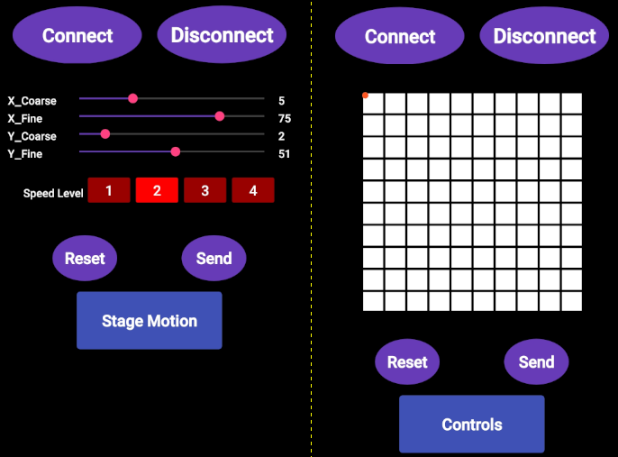
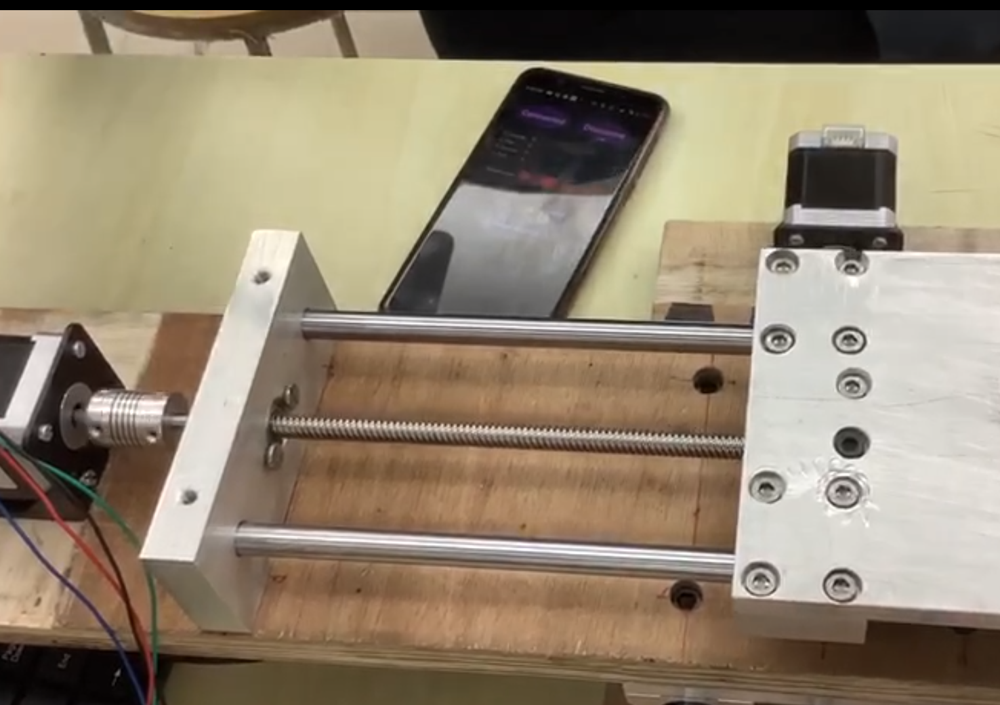
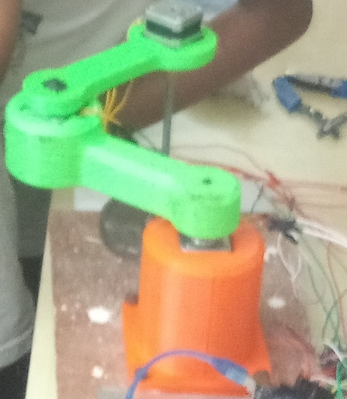
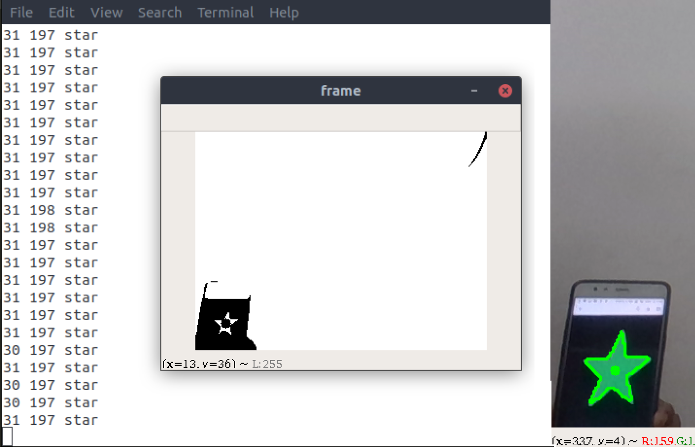

Bluetooth-controlled XY Precision Stage
Prof Prasanna Gandhi
- Designed the circuitry and electrical design required for an XY stage which functioned with stepper motor control using a lead screw mechanism
- Provided a precision of less than 100 microns to the system via stepper motor fine control (without micro-stepping)
- Developed the front-end mobile application required for controlling the XY stage, providing the capability for fine and coarse motion for each direction

Localization of Drones
Prof Bharadwaj Amruthur
- Worked on the improvement of accuracy for the Time of Flight/Arrival (ToF/ToA) mechanism for the localization of drones by optimizing the required configuration for anchors in a 3-dimensional space
- Developed an algorithm for the implementation of the TDoA mechanism, adopting ideas from the development of the ToA algorithm
- Considered and commented qualitatively on the effect of the anchor clock drift for the working of the Time Difference of Arrival (TDoA) mechanism
Sudoku Solver - Block Printer
Institute Technical Summer Project
- Captured the photo of a 9x9 Sudoku grid using an RPi Camera and formatted the same by a Python code in Raspbian OS
- Processed the image hence obtained to detect the numbers printed on the grid and to detect the unnumbered cells
- Implemented a dynamic programming based algorithm to identify letters which are combined together
- Printed the solved grid onto the existing grid or another grid for prototype using a indigenous block printer

Pick-and-Sort SCARA Robot Arm
Prof Abhishek Gupta
- Designed a 3-dimensional pick-and-sort robotic arm which processes the live view of the scan region and processes the image for objects of various shapes, further picking the objects and placing them in slots assigned for the shape.
- Supported the team in testing and in making vital decisions with respect to image processing

Heart Rate Monitor
Prof Siddharth Tallur
- Implemented a heart rate monitor circuit based on photoplethysmography
- Refined the output of an IR pair-phototransistor to a square wave using a hybrid band-pass filter and a comparator
Remote Controller Rover
Electronics and Robotics Club
- Participated as a team of four and created a remotely controlled bot in the competition conducted by the Electronics and Robotics Club (IIT-B)
- Mentored a team in the mechanical and electrical construction of the bot
The Experimental Study of the Flight of a Glider
Prof Rajkumar Pant
- Compared the available designs of several gliders and used aerodynamic rules to come up with a model as a team of eight
- Created two gliders, one for maximum straight-line range and one for maximum airborne endurance and successfully presented the two in a intra-class competition
Analysis of the Power System of an Aeroplane
Prof VM Gadre
- Performed a review of resources available about the power system and mechanism of an aeroplane
- Realised the various sub-components which make up the bulk of the system and managed the division of a superset of similar topics among five groups, each of three members
1 Hz MM:SS Stopwatch
Prof M. B. Patil
- Designed an IC555 timer circuit in order to produce a 1 Hz clock signal, a dual-IC counter circuit in order to provide mod-6 and mod-10 counting mechanisms, a D flip-flop based start-stop mechanism and a basic reset mechanism
- Simulated the components of the circuit in SequelGUI (indigenous circuit simulator) in order to test results of the hence designed circuit, and eventually created a working model of the same